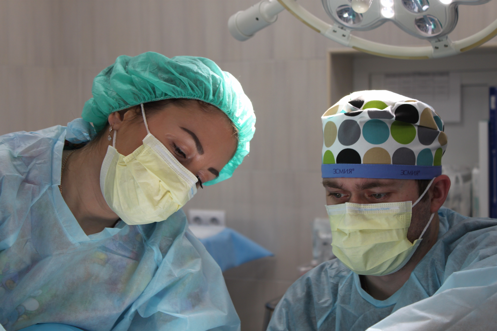

1. Medical Lab Technology
It is a program which is related to the diagnosis and identifying the treatment of diseases through clinical lab tests. These professionals identify abnormalities in samples such has different pathogenic conditions in different types of samples.
The possible designations provided are: – Phlebotomist, Lab Technician, Lab In-Charge, Sr. Lab. Technician, Technologist and Junior Scientific Officer.

Scope
Medical Laboratory technologist examine and analyze bodies different fluids, tissues, blood typing, microorganisms, chemical analyses, cell counts etc. of the human body. They play an important role in collecting the information needed for treating most pathology cases by sampling testing, analyzing and reporting such investigations.
- Decisions concerning sample collection and handling
- Daily instrument maintenance and quality control
- Sample testing
- Collection and interpretation of data
- Maintenance of accurate records and reporting of data
- Knowledge about critical values
The tests that lab technicians conduct helps to assist doctors in verifying the causes of an illness, making medical decisions and determining treatment options. Some of the areas in which medical lab technicians may specialize include:
- Microbiology
- Hematology
- Blood banking
- Immunology
- Clinical Biochemistry
- Molecular biology
- Histopathology
This Lab technician course is been provided with a new classroom that is the online classes which gives plenty of knowledge about any particular topics through audiovisual clips, virtual modes etc. These E- learnings are observed as student friendly as it brings innovative ideas for their future also in different fields.
The Programs provided are:-
1. Diploma in Medical Lab Technology (DMLT)
Duration - 2 Years
Eligibility - 10+2 Science
2. Certificate in Medical Lab Technology (CMLT)
Duration - 1 Years
Eligibility - 10
3. Certificate in Operation Theatre Technology
Duration - 1 Years
Eligibility - 10th pass
2. Operation Theatre Technology
This program prepares aspirants to work in the operation theatre as a competent reliable technologist among the other team members of a health care department, under the supervision & guidance of senior doctors and technical persons in their delivery of patient care.
Duties of an Operation Theatre Technician:
- Preparing the operating room
- Making sure all necessary supplies and surgical tools are sterile and ready
- Keeping track of all items used during surgery to make sure nothing gets misplaced
- Providing other assistance during the operation
- Delivering the patient to recovery
- Cleaning up the operating room after surgery
- Keeping a record of all the instrument & equipments
An OT Technician assists the surgeon and the anaesthestist during an operation. They also prepare operation theatre and maintain the OT equipments for surgery. Some other job responsibilities includes preparing OT for surgery, set up, checking and maintaining of equipments, preparation of patient for surgery, assistance to surgeon and anaesthetist with arranging OT equipments, managing supplies and patient’s position required as per the surgery and procedure. They learn the utilization of numerous diagnostic equipment for eg. Venitalors, monitors, defibrillators etc. Training also concentrate on the knowledge and skills of monitoring infection control policy and procedures in the operation theatre.

1. Diploma in Operation Theatre Technology (DOTT)
Duration - 2 Years
Eligibility - 10+2 Sciences
2.Certificate in Operation Theatre Technology
Duration - 1 Years
Eligibility - 10th pass
3. Medical Nursing Assistant / General Duty Assistant
Scope
It is one of the most well-known paramedical professions which is a vital part of medical care. In the hospital, from general ward to the operation theatre, nursing assistant are required everywhere to do patient care. Nursing is an essential component of the healthcare system clinics/Nursing Homes.
The roles of a General Duty Assistant, serving for inpatient facilities, include the following:

1. General Duty Assistant (DGDA)
Duration - 1 Years
Eligibility - 10+2
2. General Duty Assistant (GDA)
Duration - 6 months
Eligibility - 10th pass
3. Diploma in Medical Nursing Assistant (DMNA)
Duration - 1 Years
Eligibility - 10+2 pass
4. Certificate in Medical Nursing Assistant (CMNA)
Duration - 6 months
Eligibility - 10th pass
Other Paramedical Programs
1. Certificate in Medical Laboratory Technology (CMLT)
Duration - 1 YEAR
Eligibility - 10th pass
2. Certificate in Operation Theatre Technology (COTT)
Duration - 1 YEAR
Eligibility - 10th pass
3. Certificate in Radio Imaging Technology (CRIT)
Duration - 1 YEAR
Eligibility - 10th pass
4. Certificate in General Duty/Nursing Assistant (GDA/CNA)
Duration - 1 YEAR
Eligibility - 10th pass
5. ertificate in Medical Emergency Technology (CEMT)
Duration - 1 YEAR
Eligibility - 10th pass
6. Certificate in Dental Hygienist (CDH))
Duration - 1 YEAR
Eligibility - 10th pass
7. Certificate in Dental Assistant (CDA)
Duration - 1 YEAR
Eligibility - 10th pass
8. Certificate in Dark Room Assistant (CDRA)
Duration - 1 YEAR
Eligibility - 10th pass
9. Certificate in Blood Bank Technology (CBBT)
Duration - 1 YEAR
Eligibility - 10th pass
10. Diplolma in General Duty Assistant (DGDA)
Duration - 1 YEAR
Eligibility - 10th pass
11. Diploma in Blood Bank Technology (DBBT)
Duration - 1 YEAR
Eligibility - 12TH SCIENCE
12. Diploma in Cardiac Care Technology)
Duration - 1 YEAR
Eligibility - 12TH SCIENCE
13. Diploma in Dental Laboratory Technology (DDLT)
Duration - 1 YEAR
Eligibility - 12TH SCIENCE
14. Diploma in Medical Emergency Technology (DEMT)
Duration - 1 YEAR
Eligibility - 10TH
15. Diploma in Diabetes Educator (DDE)
Duration - 1 YEAR
Eligibility - 12TH SCIENCE
16. Diploma in Dialysis (DDT)
Duration - 1 YEAR
Eligibility - 12TH SCIENCE
17. Diploma in Optometry Assistant (D.OPT)
Duration - 1 YEAR
Eligibility - 12TH SCIENCE